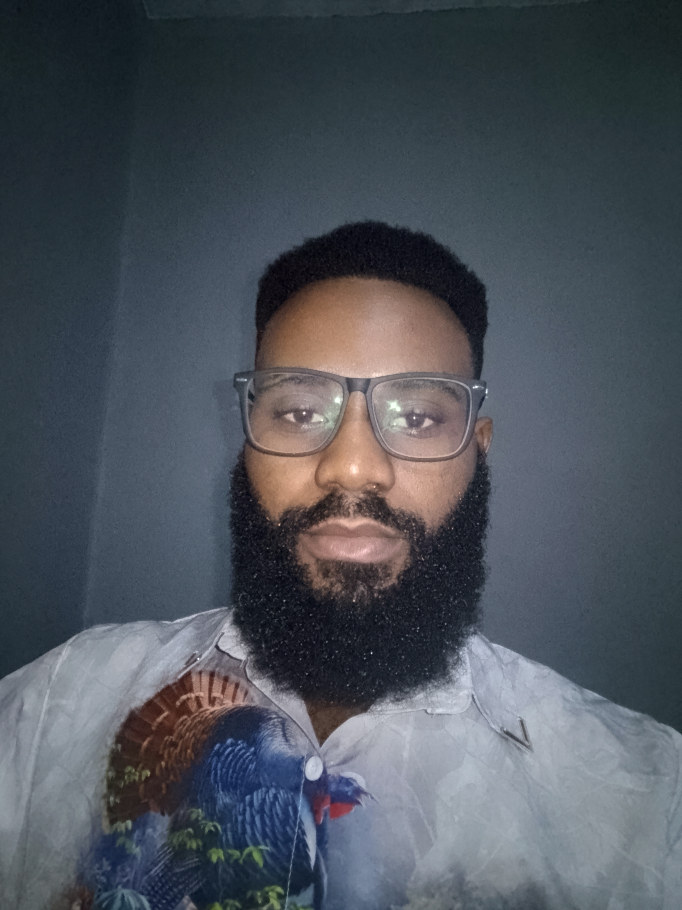

Oghenekparobo Inweh

Summary
I am an enthusiastic and dedicated individual, with crave for learning new things, I have experience in computer hardware repairs and troubleshooting/repairs, web development and blockchain development
Education
- Bachelor of Engineering, Electrical/Electronic Engineering - University of Benin (2015-2019).
- National Diploma, Electrical/Electronic Engineering - Petroleum Training Institute(2013-2015).
Work Experience
-
Electrical Engineer
January 2025 - March 2025
- Troubleshooting and repairs of vessel Electrical equipment.
- Ensuring adherence to electrical safety.
- Carrying out periodic standard electrical tests on equipment onboard the vessels.
-
Electro-technical Officer
June 2024 - Novermber 2024
- Troubleshooting and repairs of vessel Electrical equipment.
- Carrying out periodic standard electrical tests on equipment onboard the vessels.
- Ensuring adherence to electrical safety.
-
Marine Electrician
February 2023 - June 2024
- Troubleshooting and repairs of vessel Electrical equipment.
- Carrying out periodic standard electrical tests on equipment onboard the vessels.
- Ensuring adherence to electrical safety.
Skills
- Electrical troubleshooting and repairs: ⭐⭐⭐⭐
- Computer hardware repairs: ⭐⭐⭐⭐
- Web development: ⭐⭐⭐
- Blockchain development: ⭐⭐⭐
Awards adn Certifications
- Diploma in Computer Appreciation - Zignal Computer (2013)
- Basic Seafarer Safety and Survival Course - Joemarine Institute of Nautical Sciences(2023)
Others